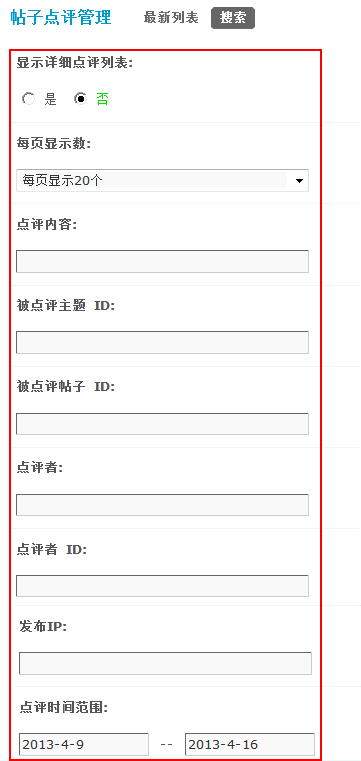
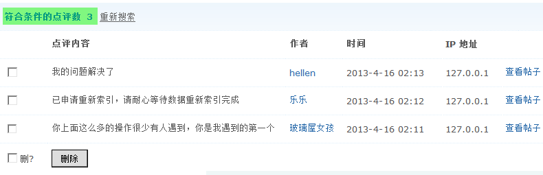
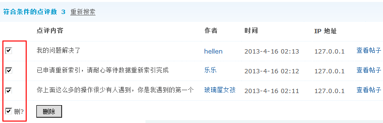

帖子点评管理
该功能主要用于对帖子点评的删除工作，包括普通帖和特殊主题如活动、投票、商品主题等的点评，搜索出符合一定条件的主题，然后进行单独或批量删除操作。下面主要介绍一下这个功能的使用方法。
说明：只有在站点内开启了点评功能后，会员才可以对主题及回复进行点评操作。
一、搜索符合条件主题
操作路径：【后台】=>【内容】=>【帖子点评管理】
1、显示详细点评列表： 选择“是”，则在搜索结果中列出符合条件的点评详细信息；选择“否”，则只会在结果中显示出符合条件的点评数量。
选择“是”的效果如下：
2、每页显示数：每页显示多少主题。
3、点评内容：按照点评的内容进行搜索。
4、被点评主题 ID：按照被点评的主题 ID 进行搜索该主题的所有点评(包括主题帖和回帖)，多个帖子 ID 中间请用半角逗号 ”,” 隔开。
5、被点评帖子 ID：按照被点评的指定的帖子进行搜索。
6、点评者：填写是谁点评了该帖子。
7、点评者 ID：填写点评者的 UID号。
8、发布IP：点评者的发布 IP 地址，如 “127.0.*.*”(不含引号)，慎用!!!
9、点评时间范围：选择点评的时间。
二、批量删除点评
管理员设置好搜索范围后，点击“提交”，即进入搜索结果页面，管理员在此页面，可以进行批量点评管理，如下图所示：
可以选择全部删除，也可以单独删除某个点评，从搜索结果页面中可以看到点评的详细内容、点评的作者、点评时间、IP地址，同时还可以查看被点评的主题。
三、最新列表
最新列表中将列出近期发布的最新的点评，可以不用搜索直接在这里进行管理操作。